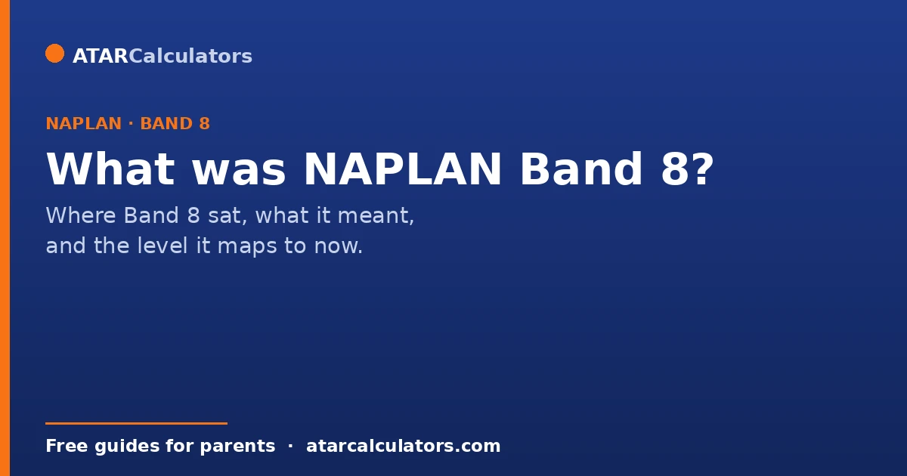
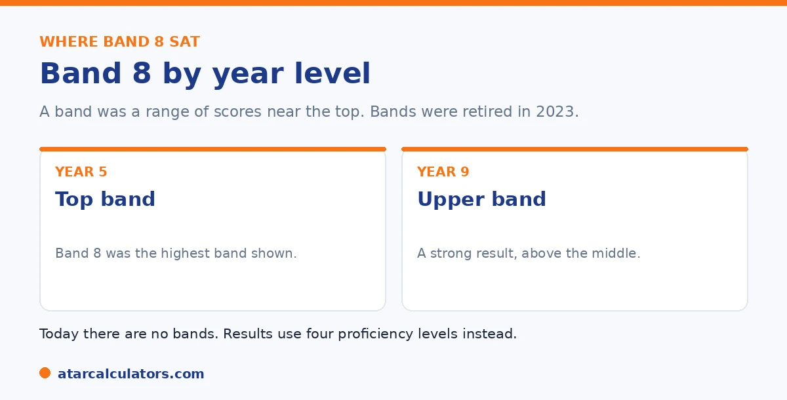

Here is the short version. Band 8 was one of the ten NAPLAN bands used until 2022. A band was a range of scores, not a single mark, and Band 8 sat near the top of the scale. For Year 5, Band 8 was the highest band shown, an excellent result. For Year 9, it was an upper band, a strong result. Bands were retired in 2023 and replaced by four proficiency levels. This guide explains what Band 8 meant and how to read results today.
Many parents still search for Band 8, often from an older report or a sibling's result. Here is what it meant, and why you will not see it on a recent report.
Bands were retired in 2023. To check a current score, use our NAPLAN band calculator or the score calculator.
Key takeaways
- Band 8 was one of the ten NAPLAN bands, used until 2022.
- A band was a range of scores, not a single mark.
- Band 8 sat near the top of the scale.
- For Year 5 it was the highest band shown. For Year 9 it was an upper band.
- Bands were retired in 2023 and replaced by four levels.
- There is no exact swap from Band 8 to a level.
What NAPLAN Band 8 was
From 2008 to 2022, NAPLAN reported results on a scale of 10 bands. Band 1 was the lowest and Band 10 the highest. Band 8 sat near the top, well above the middle of the scale.

A band was not a single score. It was a region on the scale, covering a range of results. So Band 8 described a span of achievement near the upper end.
What Band 8 meant at each year level
Because each year level used a different set of bands, Band 8 meant different things depending on the year. Year 5 reports showed Bands 3 to 8, so Band 8 was the highest band a Year 5 student could reach. That was an excellent result.
Year 7 reports showed Bands 4 to 9, so Band 8 was a high, near-top band. Year 9 reports showed Bands 5 to 10, so Band 8 was an upper band, above the middle, and a strong result. For the full set of ranges, see our bands by year level reference.
Was Band 8 a good result?
Yes. Band 8 was a strong result at every year level where it appeared, and an outstanding one for younger students. For a Year 5 child it was the very top band. For a Year 9 child it was well above the middle of their range.
In today's terms, a result that high would sit at the upper end of Strong or into Exceeding. There is no exact swap, but Band 8 was firmly a result to be pleased with.
Have a recent result and want today's level?
Open the NAPLAN band calculator →What score was Band 8?
This is where parents often want a single number, but a band was always a range, not one score. The NAPLAN scale ran from roughly 0 to 1000, divided into ten bands, so each band covered a span of that scale. Band 8 was one of the upper spans.
The exact cut scores were set for each test and printed on your child's report. So the precise range is best read from the report itself rather than a fixed figure. What is certain is that Band 8 sat in the upper part of the scale.
What replaced Band 8
Bands were retired in 2023. NAPLAN now reports four proficiency levels: Exceeding, Strong, Developing, and Needs additional support. Strong is the expected level, and Exceeding is above it.
So on a recent report, you will not see Band 8 at all. You will see a level instead. For how to read a current report, see our guide on reading the NAPLAN report.
Understanding why the change happened, and how the two systems relate, helps you make sense of an older Band 8 result in today's terms. The old ten-band scale was the same set of numbered bands across year levels. So a given band meant very different things depending on whether a child was in Year 3 or Year 9, which many parents found confusing. Worse, the way results were described could obscure whether a child was actually where they should be for their year. The four proficiency levels were introduced to fix that by naming the expected standard plainly. Strong is where a child is expected to be for their year level, and Exceeding is above it. Developing is working towards it. Needs additional support flags a child who would benefit from targeted help. Because the two systems were built differently, there is no exact one-to-one conversion. But the general mapping is intuitive. A high band for the year corresponds roughly to Exceeding, an upper-middle band to Strong, a lower-middle band to Developing. And a low band to Needs additional support. So if you are holding an older report showing Band 8, the useful move is not to hunt for a precise equivalent. Place it approximately, and read it in the context of the year level it applied to. For any recent result, focus on the current level system. The proficiency levels are designed to tell you, in plain language, whether your child is meeting the standard for their year, which the old bands never made obvious.
Band 8 and the HSC minimum standard
In New South Wales, under the old band system, reaching Band 8 in Year 9 reading, writing and numeracy could pre-qualify a student for the HSC minimum standard in that area. It was a common reason families watched for Band 8.
That pathway has changed with the move to proficiency levels and the HSC minimum standard online tests. So check NESA for the current requirements rather than relying on the old Band 8 rule.
Putting Band 8 in context
Band 8 meant very different things depending on the year. At Year 3 it was an exceptional result, well above expectation. At Year 9 it was a solid, middle-of-the-range result.
So a family celebrating Band 8 at Year 3 and one seeing Band 8 at Year 9 were looking at quite different achievements, even though the band number was the same.
How to read a Band 8 result today
If you are looking at an older report showing Band 8, read it by the old system, not the new one. Band 8 does not convert neatly to a proficiency level, because the two scales were built differently.
For any recent or future report, look at the proficiency level and the scaled score instead. So an old Band 8 is best understood in its own context, as a solid result for its year, rather than translated into today's levels.
Common questions
What is NAPLAN Band 8?
Band 8 was one of the ten NAPLAN bands used until 2022. A band was a range of scores near the top of the scale. Band 8 sat well above the middle, and meant a strong result.
Is Band 8 a good result?
Yes. Band 8 was a strong result wherever it appeared. For Year 5 it was the highest band shown, an excellent result. For Year 9 it was an upper band, above the middle.
What score was Band 8?
A band was a range of scores, not one number. The NAPLAN scale ran from roughly 0 to 1000, divided into ten bands, and Band 8 was one of the upper spans. The exact cut scores were printed on the report.
What replaced Band 8?
Four proficiency levels replaced the bands in 2023: Exceeding, Strong, Developing, and Needs additional support. A recent report shows a level, not a band.
What proficiency level is Band 8 equal to?
There is no exact swap. A result as high as Band 8 would sit at the upper end of Strong or into Exceeding in today's system, depending on the year level.
Why don't I see Band 8 anymore?
Because bands were retired in 2023. NAPLAN now reports four proficiency levels instead. If your report shows a band, it is from 2022 or earlier.
Turn an old band into today's level
Enter a NAPLAN result and year level to see the indicative level. Free, and no signup.
Open the NAPLAN band calculator →Related guides
This guide is general information for parents, not formal advice. NAPLAN reporting can change, so always check the official details on the National Assessment Program (NAP) site, and talk to your child's teacher. Reviewed by the ATARCalculators Editorial Team.